☰ 目录
markdown 绘图插件 mermaid
原文：https://blog.csdn.net/wangyaninglm/article/details/52887045
原文： http://www.sysctl.me/2017/11/11/Draw%20Diagrams%20With%20Markdown/
流程图(flowchart)
graph LR; %% 从左到右
A-->B;
A-->C;
B-->D;
C-->D;
效果如下【即时渲染】：
graph LR; %% 从左到右
A-->B;
A-->C;
B-->D;
C-->D;
时序图(Sequence diagram)
sequenceDiagram
participant Alice %% 先给两个参与者
participant Bob
Alice->John:Hello John, how are you?
loop Healthcheck % 自循环[标题]
John->John:Fight against hypochondria % 自循环内容
end
Note right of John:Rational thoughts <br/>prevail... % 右边注释
John-->Alice:Great! % -> 实线； --> 虚线
John->Bob: How about you?
Bob-->John: Jolly good!
生成的图表如下所示：
sequenceDiagram
participant Alice
participant Bob
Alice->John:Hello John, how are you?
loop Healthcheck
John->John:Fight against hypochondria
end
Note right of John:Rational thoughts <br/>prevail...
John-->Alice:Great!
John->Bob: How about you?
Bob-->John: Jolly good!
甘特图（gantt diagram）
这种图，主要是为了完成任务的
gantt
dateFormat YYYY-MM-DD % 日期格式
title Adding GANTT diagram functionality to mermaid % 标题
section A section % 上面的一部分
Completed task :done, des1, 2014-01-06,2014-01-08 % 【起始， 终止】
Active task :active, des2, 2014-01-09, 3d % [起始，之后的时长]
future task : des3, after des2, 5d % [起始des2 的后面, 之后持续5天]
future task2 : des4, after des3, 5d %
section Critical tasks
Completed task in the critical line :crit, done, 2014-01-06,24h % crit 会变红
Implement parser and json :crit, done, after des1, 2d
Create tests for parser :crit, active, 3d % 默认继上一天之后，持续3天
Future task in critical line :crit, 5d % 默认继上一天之后，持续5天
Create tests for renderer :crit,2d
Add to ,mermaid :1d
生成的表如下：
gantt
dateFormat YYYY-MM-DD
title Adding GANTT diagram functionality to mermaid
section A section
Completed task :done, des1, 2014-01-06,2014-01-08
Active task :active, des2, 2014-01-09, 3d
future task : des3, after des2, 5d
future task2 : des4, after des3, 5d
section Critical tasks
Completed task in the critical line :crit, done, 2014-01-06,24h
Implement parser and json :crit, done, after des1, 2d
Create tests for parser :crit, active, 3d
Future task in critical line :crit, 5d
Create tests for renderer :2d
Add to ,mermaid :1d
下游项目
Mermaid 是由Knut Sveidqbist发起旨在轻便化的文档撰写。所有开发者:开发者列表
简单图解析
Graph
graph TD
A --> B
效果：
graph TD
A --> B
这是申明一个由左到右，水平向右的图。\
可能方向有：
- TB - top bottom
- BT - bottom top
- RL - right left
- LR - left right
- TD - same as TB
节点与形状
默认节点
graph LR
id1
效果：
graph LR
id1
注意：’id’显示在节点内部。
文本节点
graph LR
id[This is the text in the box];
效果：
graph LR
id[This is the text in the box];
圆角节点
graph LR
id(This is the text in the box);
效果：
graph LR
id(This is the text in the box);
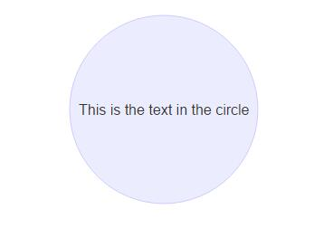
graph LR
id((This is the text in the circle)); %% 两个圆括号
非对称节点(asymetric shape)
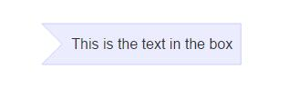
graph LR
id>This is the text in the box] %% 注意是id> *** ]
菱形节点(rhombus)
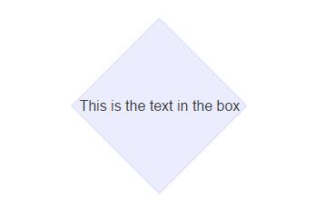
graph LR
id{This is the text in the box} %% 菱形节点用的是id{}
连接线
节点间的连接线有多种形状，而且可以在连接线中加入标签：
箭头形连接
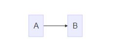
graph LR;
A-->B; %% 箭头就是 -->
开放行连接
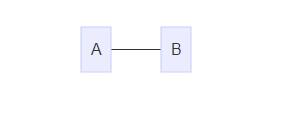
graph LR
A --- B %% 无箭头--
标签连接
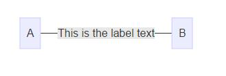
graph LR
A -- This is the label text --- B; %% 中间加标签 -- ** ---
箭头标签连接
A–>|text|B
或者
A– text –>B %% 这种更直观
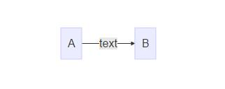
graph LR
A-- text -->B12
虚线(dotted link,点连线)
-.-> % 带箭头的
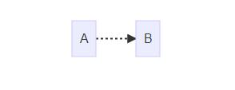
graph LR
A-.->B12
-.-. % 不带箭头的
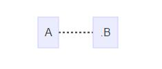
graph LR
A-.-.B12
标签虚线
-.text.-> % 标签用虚线
graph LR
A-.text.->B12
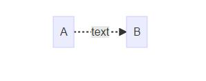
粗实线
>
graph LR
A==>B12
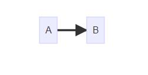
=
graph LR
A===B12
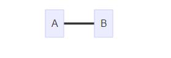
标签粗线
=\=text\>
graph LR
A==text==>B12
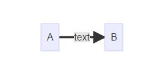
=\=text\=
graph LR
A==text===B12
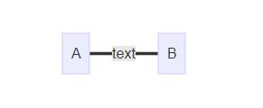
特殊的语法
使用引号可以抑制一些特殊的字符的使用，可以避免一些不必要的麻烦。
graph LR
d1[“This is the (text) in the box”]
graph LR
d1["This is the (text) in the box"]12
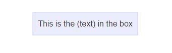
html字符的转义字符
转义字符的使用语法：
流程图定义如下：
graph LR\
A[“A double quote:#quot;”] –> B[“A dec char:#9829;”]
渲染后的图如下：
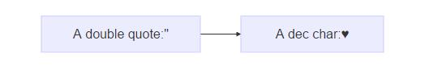
graph LR
A["A double quote:#quot;"]-->B["A dec char:#9829;"] %% 特殊的 HTML 符号
子图(Subgraphs)
subgraph title
graph definition
end
示例：
graph TB
subgraph one
a1 --> a2
end
subgraph two
b1 --> b2
end
subgraph three
c1 --> c2
end
c1 --> a2
结果：
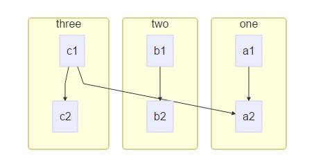
基础fontawesome支持
如果想加入来自frontawesome的图表字体,需要像frontawesome网站上那样引用的那样。\
详情请点击：fontawdsome
引用的语法为：++fa:#icon class name#++
graph TD
B["fa:fa-twitter for peace"]
B-->C[fa:fa-ban forbidden]
B-->D(fa:fa-spinner);
B-->E(A fa:fa-camerra-retro perhaps?);
渲染图如下：
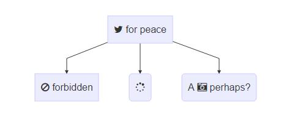
以上reference：
1.mermaid docs
第二部分—图表(graph)
定义连接线的样式
graph LR
id1(Start)-->id2(Stop)
style id1 fill:#f9f,stroke:#333,stroke-width:4px;
style id2 fill:#ccf,stroke:#f66,stroke-width:2px,stroke-dasharray:5,5;
渲染结果：
备注：这些样式参考CSS样式。
样式类
为了方便样式的使用，可以定义类来使用样式
类的定义示例：
classDef className fill:#f9f,stroke:#333,stroke-width:4px;
对节点使用样式类：
class nodeId className;
同时对多个节点使用相同的样式类：
class nodeId1,nodeId2 className;
可以在CSS中提前定义样式类，应用在图表的定义中。
graph LR
A-->B[AAABBB];
B-->D;
class A cssClass;
默认样式类：\
当没有指定样式的时候，默认采用。
classDef default fill:#f9f,stroke:#333,stroke-width:4px;
示例：
graph LR
classDef default fill:#f90,stroke:#555,stroke-width:4px;
id1(Start)-->id2(Stop)
结果：
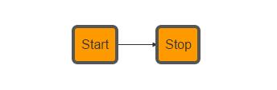
序列图(sequence diagram)1
序列图
示例：
sequenceDiagram
Alice->>John: Hello John, how are you ?
John-->>Alice: Great!
Alice--->>John: Huang,you are better .
John-->>Alice: yeah, Just not bad.
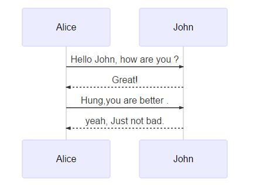
观察上面的图，如果想让John出现在前面，如何控制，mermaid通过设定参与者(participants)的顺序控制二者的顺序。上面的图可以做如下修改：
sequenceDiagram
participant John
participant Alice
Alice-xJohn:Hello John,how are you?
John-->>Alice:Great!
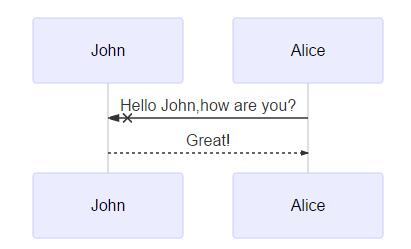
消息的语法：
实线或者虚线的使用：
[Actor][Arrow][Actor]:Message text\
Arrow的六种样式：
示例：
sequenceDiagram
Alice->John: Hello John, how are you ?
John-->Alice:Great!
Alice->>John: dont borther me !
John-->>Alice:Great!
Alice-xJohn: wait!
John--xAlice: Ok!
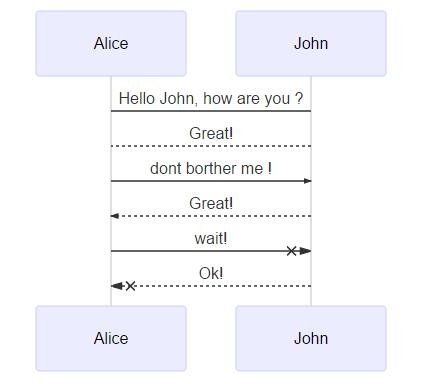
便签
给序列图增加便签：\
具体规则：\
[right of | left of | over][Actor]:Text\
示例：
sequenceDiagram
participant John
Note left of John: Text in note
结果：
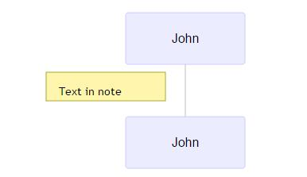
跨越两个Actor的便签：
sequenceDiagram
Alice->John:Hello John, how are you?
Note over Alice,John:A typical interaction
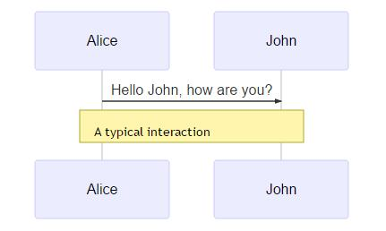
循环Loops
在序列图中，也可以使用循环，具体规则如下：
loop Loop text
... statements...
end
示例：
sequenceDiagram
Alice->>John: Hello!
loop Reply every minute
John->>Alice:Great!
end
渲染结果：
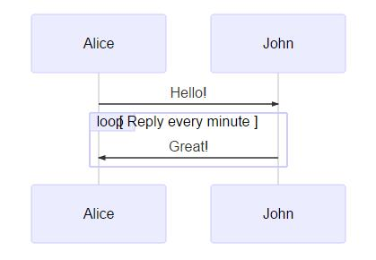
选择ALT
在序列图中选择的表达。规则如下：
alt Describing text
...statements...
else
...statements...
end
或者使用opt(推荐在没有else的情况下使用)
opt Describing text
...statements...
end
示例：
sequenceDiagram
Alice->>Bob: Hello Bob, how are you?
alt is sick
Bob->>Alice:not so good :(
else is well
Bob->>Alice:Feeling fresh like a daisy:)
end
opt Extra response
Bob->>Alice:Thanks for asking
end12345678910
渲染结果如下：
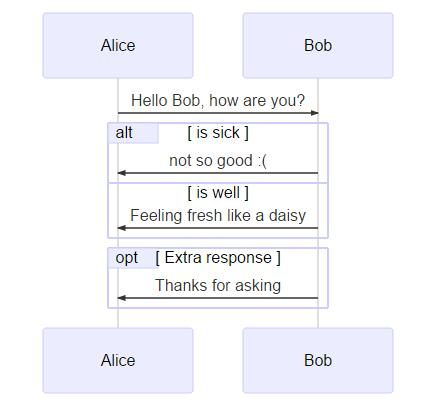
甘特图(gantt)2
甘特图是一类条形图，由Karol Adamiechi在1896年提出, 而在1910年Henry Gantt也独立的提出了此种图形表示。通常用在对项目终端元素和总结元素的开始及完成时间进行的描述。
示例：
gantt
dateFormat YYYY-MM-DD
section S1
T1: 2014-01-01, 9d
section S2
T2: 2014-01-11, 9d
section S3
T3: 2014-01-02, 9d
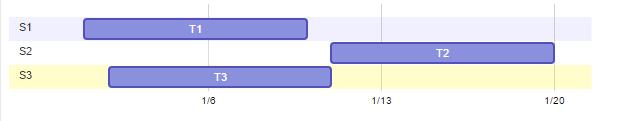
先来看一个大的例子：
gantt
dateFormat YYYY-MM-DD
title Adding GANTT diagram functionality to mermaid
section A section
Completed task :done, des1, 2014-01-06,2014-01-08
Active task :active, des2, 2014-01-09, 3d
Future task : des3, after des2, 5d
Future task2 : des4, after des3, 5d
section Critical tasks
Completed task in the critical line :crit, done, 2014-01-06,24h
Implement parser and jison :crit, done, after des1, 2d
Create tests for parser :crit, active, 3d
Future task in critical line :crit, 5d
Create tests for renderer :2d
Add to mermaid :1d
section Documentation
Describe gantt syntax :active, a1, after des1, 3d
Add gantt diagram to demo page :after a1 , 20h
Add another diagram to demo page :doc1, after a1 , 48h
section Last section
Describe gantt syntax :after doc1, 3d
Add gantt diagram to demo page : 20h
Add another diagram to demo page : 48h
获得的图渲染后如下：
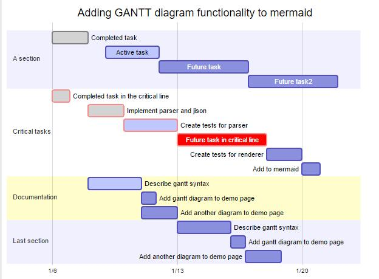
| header 1 |
header 2 |
| title |
标题 |
| dateFormat |
日期格式 |
| section |
模块 |
| Completed |
已经完成 |
| Active |
当前正在进行 |
| Future |
后续待处理 |
| crit |
关键阶段 |
| 日期缺失 |
默认从上一项完成后 |
关于日期的格式可以参考：
- string-format
- Time-Formatting
Demo
graph TB
sq[Square shape] --> ci((Circle shape))
subgraph A subgraph
di{Diamond with line break} -.-> ro(Rounded)
di==>ro2(Rounded square shape)
end
e --> od3>Really long text with linebreak<br>in an Odd shape]
cyr[Cyrillic]-->cyr2((Circle shape Начало));
classDef green fill:#9f6,stroke:#333,stroke-width:2px;
classDef orange fill:#f96,stroke:#333,stroke-width:4px;
class sq,e green
class di orange
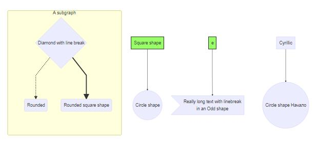
reference
mermaid docs